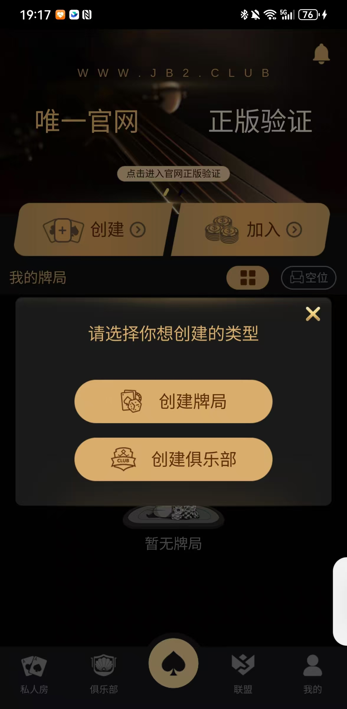
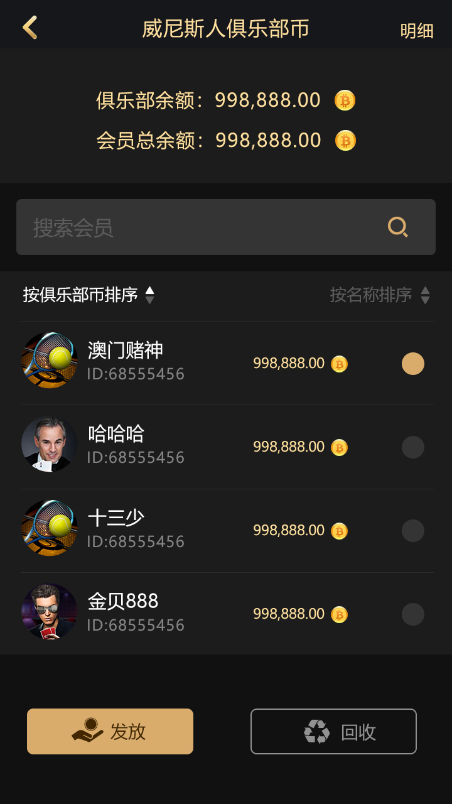

Club · League · Friend Game
圍繞建立和加入俱樂部、聯盟、俱樂部幣、好友約局與牌桌管理，說明可核對的用戶端、伺服器和產品介面。
玩家建立俱樂部或申請加入，管理者維護成員與權限。
多個俱樂部加入聯盟，組織跨俱樂部牌局和賽事。
包含俱樂部幣展示和相關管理流程；實際規則以程式碼和設定為準。
好友局、私人桌、玩家戰績、排行榜和營運報表場景。

查看德州私人局源碼 · 查看德州撲克源碼